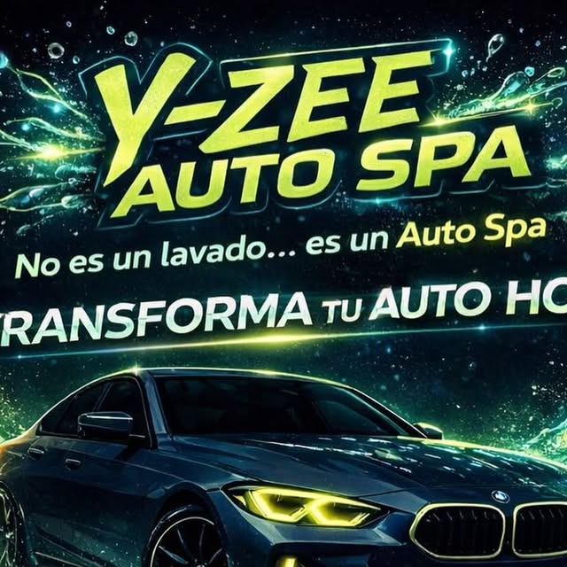
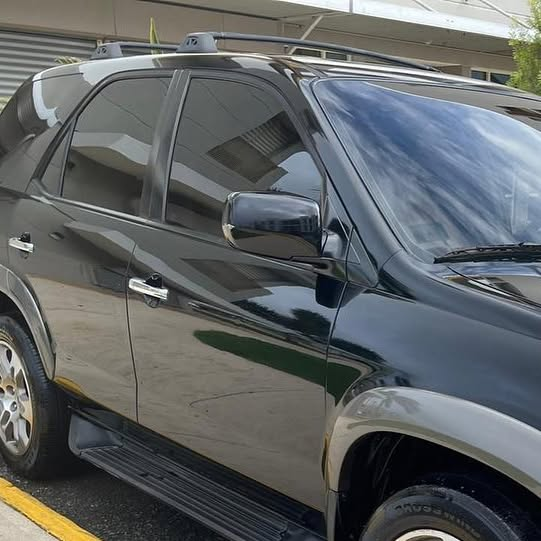

Carolina, Puerto Rico · Lavado a domicilio
Lavado de autos a domicilio en el Área Metropolitana: interior, exterior, brillo con pulidora, remoción de brea, plasticina y lavado de motor. No es un lavado... es un Auto Spa.
Resultados reales
Cada foto es un trabajo real de Y-ZEE AUTO SPA. Toca las flechas o desliza para ver más.
A domicilio

Lavado completo por fuera, donde estés: espuma, lavado a mano y secado sin marcas. Tu auto sale brillando sin que muevas un dedo.
Interior profundo: aspirado, superficies, cristales por dentro y ese olor a nuevo que se siente al abrir la puerta.
Motor limpio y cuidado con el procedimiento correcto para tu vehículo. Un motor limpio se ve bien y se mantiene mejor.
Brillo con pulidora, remoción de brea y plasticina: descontaminamos la pintura y le devolvemos vida, profundidad y brillo.

Quiénes somos
Somos un servicio de lavado de autos a domicilio en Carolina y el Área Metropolitana. Vamos donde estés con todo lo necesario para dejar tu auto como nuevo: interior, exterior, brillo con pulidora, remoción de brea, plasticina y lavado de motor.
No es un lavado... es un Auto Spa. Estamos para servirles.
Preguntas frecuentes
Sí. Somos un servicio a domicilio en Carolina y el Área Metropolitana. Escríbenos por WhatsApp al +1 939-246-5870 y coordinamos tu cita.
Lavado interior y exterior, brillo con pulidora, remoción de brea, plasticina y lavado de motor, entre otros. Escríbenos y te recomendamos el servicio que tu auto necesita.
Sí, el lavado de motor es uno de nuestros servicios. Escríbenos por WhatsApp al +1 939-246-5870 y coordinamos el servicio para tu vehículo.
La plasticina descontamina la pintura y la remoción de brea elimina los residuos pegados de la carretera. Ambas dejan la pintura lista para un brillo con pulidora.
Por WhatsApp al +1 939-246-5870. Dinos qué servicio quieres y coordinamos el día y la hora que te convenga.
Somos un servicio a domicilio en Carolina y el Área Metropolitana, Puerto Rico. Vamos donde estés, no tienes que moverte.
Síguenos en @yzeeautospa y mira cada trabajo terminado.
Agenda tu cita
Teléfono / WhatsApp
+1 939-246-5870Área de servicio
Carolina y Área Metropolitana, PR · A domicilio
Llena esto y te abrimos WhatsApp con tu mensaje listo.
Esta página la creó ManuPro. Escríbenos hoy mismo y cotiza la website profesional de tu negocio.
Cotizar por WhatsApp